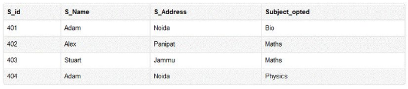
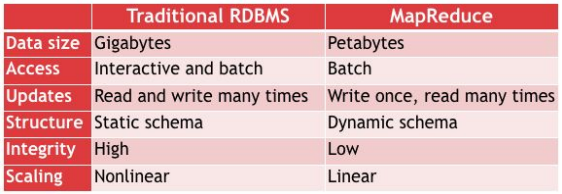

RDMS: 대규모 데이터를 빠르게 조회
HDFS
클라이언트들이 바라봤을 때 끊기지 않게
string access
seek time / transfer rate : 탐색 시간 / 대역폭
대역폭이 커진 속도를 탐색 시간이 못 따라잡았다
latency : 데이터를 읽으려고 할 때 hadoop은 processing 시간이 필요
seek time이 줄어
디스크 블럭 사이즈가 작아지면 디스크 공간 효율은 좋아지는데 병목
디스크 블럭 사이즈가 작아지면 main node가 데이터를 많이 읽어와야 함
B-Tree (RDMS) vs MapReduce
structured data - csv / RDMS 관리 용이
semi-strucured data - json / Hadoop에서 관리
unstructured data - image, video / Hadoop에서 관리
Normalization 정규화 : 중복이나 불일치를 줄이기 위해 테이블 쪼갠다
Not Normalization 비정규화 : 더 빠르고 쉬운 검색을 위해 테이블 통합

수강과목이 하나도 없는 학생의 정보 자체가 사라질 수 있음
-> 학생 정보 테이블과 과목 테이블을 분리하는 정규화
scaling out / up : 가로 방향으로, 동일한 데이터들이 많아지는 것 / 하드웨어의 기술 자체를 향상 시킴

update: 여러 번 쓰고 여러번 읽음 / 한 번만 쓰고 여러번 읽는 과정, 중간 데이터 수정하지 않음
Hadoop과 RDBM의 차이가 모호해짐
Hadoop 이름 origin: the name his kid gave a stuffed yellow elephant
parallel 하게 돌릴 때 어려움
1. 데이터를 같은 사이즈로 나누는 것 어려움
2. 결과값 취합
3. 싱글 머신의 용량 제한
reducer 2개
-> key 값이 2개로 분산(partition)
partition은 hash func 사용
combiner
local reducer, output 자체에서 한 번 더 연산해서 reducer로 넘김
map에서 넘긴 data를 shuffle하고 combine
mapper 상속
input output data type
java의 data type은 너무 무거워서 hadoop이 자체 제작
long - longwr, str - text
파일 경로가 중복되면 얄짤 없이 예외 처리
덮어 써주지 않음, 데이터 손실 막기 위해서